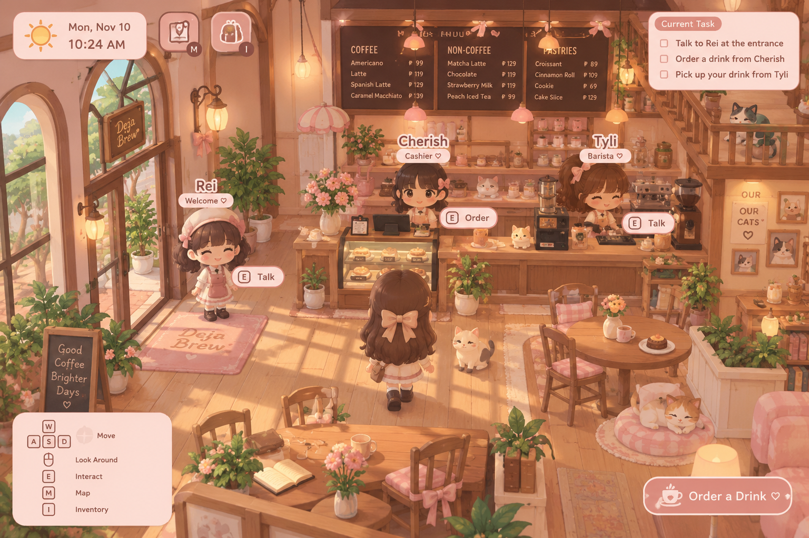

Your little café world
Tap the characters or café counter to interact with your scene.
✿ Cozy mode · Day 01

Welcome! Tap a character to start your café shift.
Welcome to Deja Brew ♡
This version uses the actual café scene artwork as the background so it matches the visual you liked. Tap Rei, Cherish, Tyli, or the counter to play through a mini café story.
Task: greet Rei → order from Cherish → collect your drink from Tyli.